An interface identity of reeded prismatic glass: one refraction, one specular edge, one colour that escapes the pane.

The pane tints what it covers toward coral and lifts on a 1px specular edge. The ribs arrive as bands, not as a blur.
Syne carries the display at 92/0.92 with −0.035em tracking; Schibsted Grotesk reads at 16.5/1.66 over 66ch; Geist Mono labels every ratio. Small type never sits on the field.